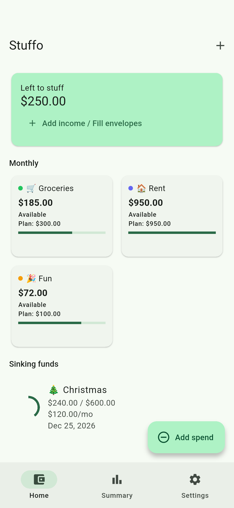

Give your money a place.
Add income and choose how much to put in each envelope. Leave some unallocated if you want.
A place for every plan
Cash stuffing on your phone. Plan your paycheck, see what’s left to spend and set money aside for what’s next.
Get Stuffo on Google Play ↗Android · English · One USD budget. You record transactions manually.
Pay by card? Here’s how it works →
Example budget, real app.
The everyday routine
Add income and choose how much to put in each envelope. Leave some unallocated if you want.
Log each purchase. Your envelope balance updates from the amounts you enter, whether you paid by card or cash.
Set a savings target and a date. Stuffo calculates a monthly contribution and shows your progress.
A real app, with example amounts
Make a plan you can use
Start small
Stuffo does not hold or move money, connect to your bank, or import purchases. Missed entries mean your budget record is incomplete. Your money stays wherever you keep it.
Get Stuffo on Google Play ↗Android · English · One USD budget. You record transactions manually.